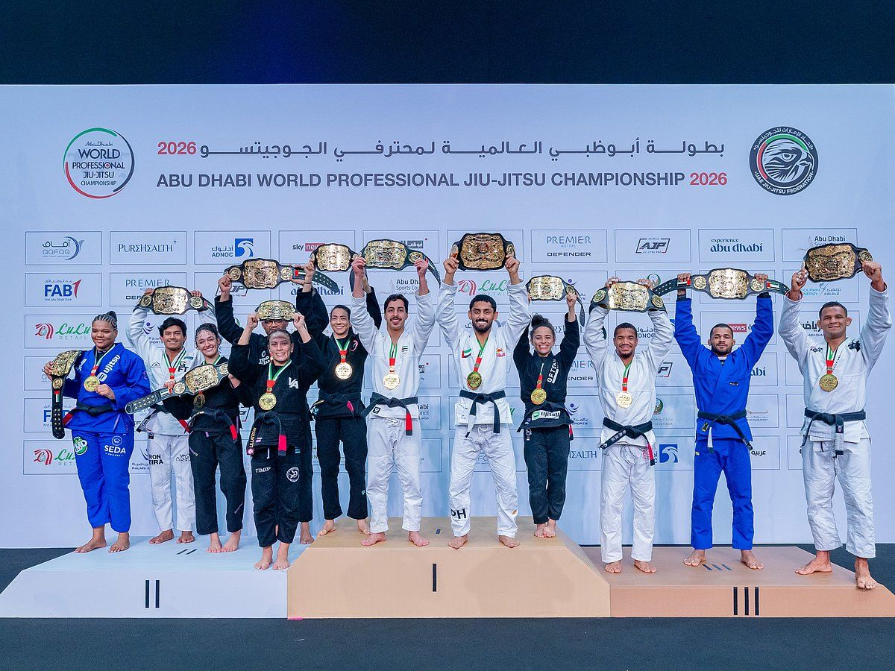
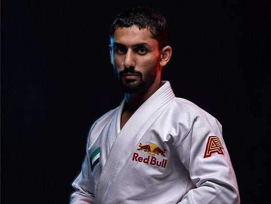
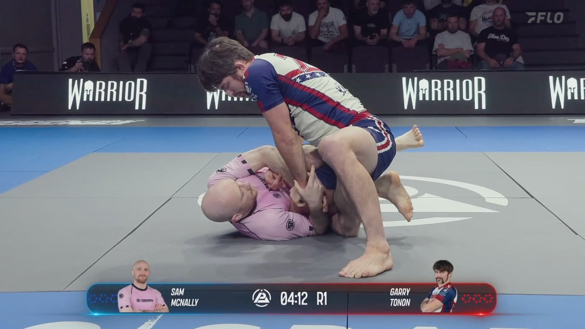
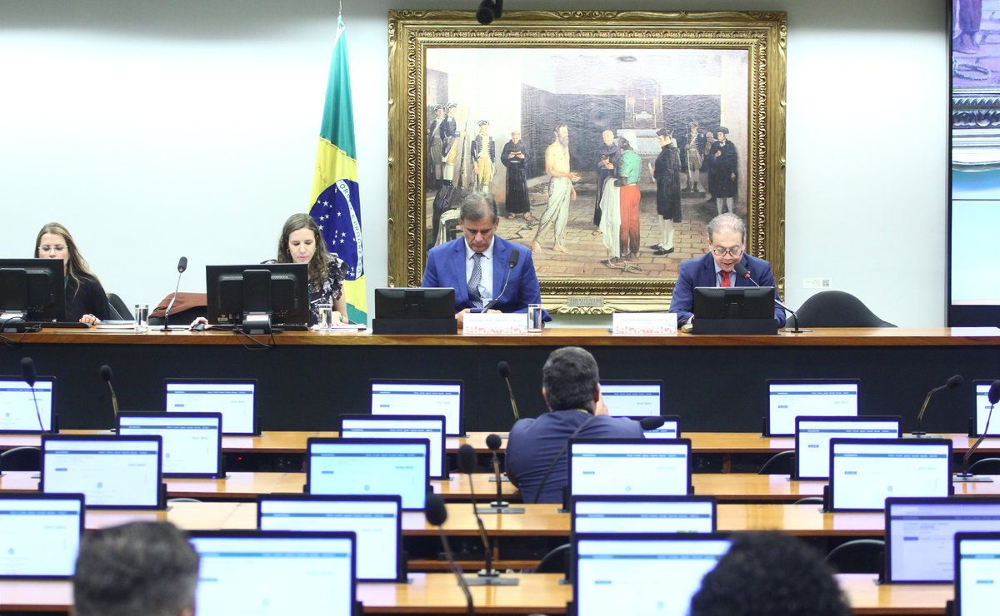
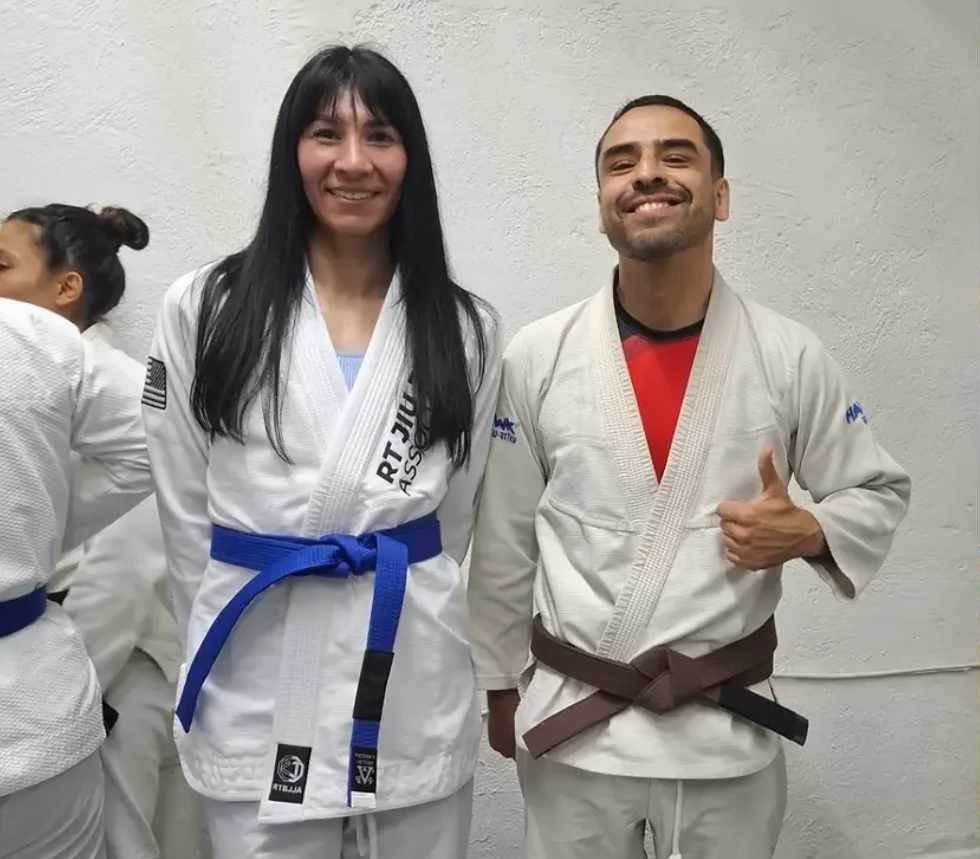

Fala, galera! Você já parou pra pensar que um campeonato grande é tipo uma maratona de cidade? A TV mostra os quenianos chegando na frente, mas quem enche a rua é o pessoal que treina antes do trabalho e só quer terminar a prova inteiro. Nesta semana teve uma dessas: o World Pro, em Abu Dhabi, juntou mais de 10 mil atletas, de todas as faixas e idades, e os brasileiros brilharam no topo.
Mas não foi só isso. Teve revanche de quatro anos resolvida com uma kimura no primeiro round, teve o jiu-jitsu dando mais um passo pra ser reconhecido como cultura brasileira em lei, teve um veterano do MMA falando sem rodeio sobre quanto custa competir e teve ex-desafiante ao cinturão do UFC feliz da vida com a faixa-azul.
Como sempre, o Estagiário aqui separou o que importa e comentou do ponto de vista de quem treina por hobby, tem trabalho, família e dois ou três treinos na semana quando dá. Bora lá!
1. World Pro 2026: Fellipe Andrew e Gabi Pessanha no topo, e o primeiro atleta da Red Bull é campeão

O que rolou: no sábado, 21 de novembro, a Mubadala Arena, em Abu Dhabi, recebeu as finais do Abu Dhabi World Pro 2026, organizado pela AJP. Foram 12 finais: sete na faixa-preta masculina e cinco na divisão feminina, que junta faixas marrom e preta. Fellipe Andrew finalizou Telmo Castro em 2min19s e ficou com o título até 94 kg. Gabi Pessanha passou pela seletiva do Brasil e depois venceu as quatro lutas do grupo até 95 kg, duas semanas depois de conquistar o quarto título no The Crown. No peso até 120 kg, Felipe Bezerra venceu Alexander Sak por decisão dos árbitros depois da prorrogação. Os donos da casa fizeram história, segundo o Gulf News: Omar Alsuwaidi (56 kg) e Khaled Mohammed Al Shehhi (62 kg) ganharam ouro, ambos em finais contra brasileiros, e Saeed Alkubaisi foi prata no 85 kg. E o detalhe curioso: na quinta-feira, 19 de novembro, a Red Bull tinha anunciado o Al Shehhi como o primeiro atleta de jiu-jitsu patrocinado pela marca no mundo. Ele é campeão dos Jogos Asiáticos e foi prata no Mundial da IBJJF deste ano, na primeira participação dele no evento como faixa-preta. No total, foram 13 dias de evento, com mais de 10 mil atletas de mais de 130 países, incluindo o Mundial Master, que terminou no dia 18 com a Commando Group no topo por equipes e o João Miyao campeão do Master 1 faixa-preta até 56 kg. Fontes: Fabric Jiu-Jitsu, Sinistro News, Gulf News: ouros dos Emirados, Gulf News: Red Bull e BJJ Tap: masters.
Pensa comigo: a Gabi Pessanha é uma das maiores campeãs da atualidade e mesmo assim entrou pela seletiva do Brasil, lutando uma rodada a mais, como todo mundo. Ninguém fura a fila. E repara naquele número: mais de 10 mil atletas. As finais da faixa-preta são a vitrine, mas a maior parte daquele tatame foi gente comum, master, faixa colorida, pai e mãe de família que juntou dinheiro, pegou avião e foi testar o próprio jiu-jitsu. O campeonato grande é feito por eles também.
Já a Red Bull é sinal de outra coisa. Quando uma marca que patrocina Fórmula 1 e esporte radical resolve colocar dinheiro num atleta de jiu-jitsu, é porque o esporte está aparecendo pra quem nunca pisou num tatame. Isso não muda a sua mensalidade, mas ajuda a trazer gente nova pra academia e a tirar o jiu-jitsu daquela fama de "briga de academia". Na prática: se você é master e nunca competiu, não precisa começar por Abu Dhabi. Escolhe um campeonato pequeno, perto de casa, na sua idade e no seu peso, e vai com um objetivo só: lutar seis minutos sem travar. Medalha é bônus.
2. Polaris 40: Garry Tonon finaliza Sam McNally e chama Ryan Hall

O que rolou: no sábado, 21 de novembro, o americano Garry Tonon finalizou o irlandês Sam McNally com uma kimura ainda no primeiro round e virou o novo campeão peso-leve do Polaris 40, em Southampton, na Inglaterra. Foi a revanche do ADCC 2022, quando o McNally venceu por 3 a 0 nos pontos. O Tonon lutou nas cinco primeiras edições do Polaris e não aparecia num card do evento desde 2017. Depois da vitória, desafiou o Ryan Hall para uma luta, que ainda não foi marcada. O Hall, de 41 anos, foi retirado do elenco do UFC na quarta-feira, 18 de novembro, quase cinco anos depois da última luta, em dezembro de 2021. Em 2024 ele tinha contado que passou por 19 cirurgias nesse período. No começo da semana, o Tonon também deu o que falar numa entrevista repercutida pelo BJJDoc: disse que o MMA é "o pior esporte do mundo", que já teve crise de pânico no ônibus a caminho da luta e que o John Danaher o ensinou a priorizar a leitura da distância em vez de buscar o golpe perfeito. No card todo, 11 das 18 lutas terminaram em finalização. Fontes: FloGrappling, Fabric Jiu-Jitsu, MMA Fighting e BJJDoc.
Quatro anos esperando a revanche e resolveu com uma kimura, um golpe que todo faixa-branca aprende nas primeiras semanas. Isso diz muito. No alto nível não tem golpe secreto: tem o básico feito na hora certa, com ajuste fino e confiança. E outra coisa: perder pro McNally no ADCC não fez o Tonon pior atleta. Fez ele voltar com uma tarefa clara. Derrota bem usada vira mapa.
Mas a parte que eu mais gostei foi a honestidade sobre o nervosismo. Um cara com esse currículo dizendo que já quase entrou em pânico antes de lutar deveria tranquilizar muita gente que sente o coração disparar antes do rola com o professor ou na véspera do primeiro campeonato. Não é fraqueza, é corpo de ser humano. Na prática: quando bater a ansiedade, faz o que os atletas fazem: respira devagar (puxa o ar em quatro tempos, solta em seis), lembra de uma única tarefa pra luta e começa. E o Ryan Hall, com 19 cirurgias no currículo, fica de lembrete: cuidar do corpo é o que te deixa no tatame por mais tempo.
3. Jiu-jitsu como manifestação cultural brasileira: o projeto passou na CCJ

O que rolou: a Agência Câmara noticiou na quinta-feira, 19 de novembro, que a Comissão de Constituição e Justiça e de Cidadania (CCJ) da Câmara dos Deputados aprovou o Projeto de Lei 5374/2019, do ex-deputado Delegado Antônio Furtado, que declara o jiu-jitsu brasileiro como manifestação cultural. Segundo a ficha de tramitação, a votação aconteceu em 4 de novembro. O texto original queria transformar o jiu-jitsu em patrimônio esportivo e cultural imaterial do Brasil, mas foi alterado na Comissão de Cultura, porque declarar um bem como patrimônio imaterial é atribuição do Iphan, que é do Poder Executivo. O projeto ainda não é lei: segue direto para o Senado, a não ser que haja recurso para ser votado no Plenário da Câmara, e o prazo para esse recurso (cinco sessões, contadas a partir de 12 de novembro) ainda constava em aberto na ficha. Na mesma leva, a CCJ aprovou o PL 3017/2025, do deputado Coronel Assis, que cria o Dia Nacional do Jiu-Jitsu Paradesportivo, em 25 de junho. Fontes: Agência Câmara, ficha do PL 5374/2019 e BJJ Tap.
Vamos combinar, né? Nada disso muda o seu treino de terça. Ninguém vai ganhar desconto na mensalidade nem passar a guarda mais fácil por causa de um projeto de lei. Mas símbolo importa. O jiu-jitsu nasceu de uma mistura que só podia ter acontecido no Brasil e hoje é treinado no mundo inteiro, de Abu Dhabi a Southampton, como a gente viu aí em cima. Ser reconhecido como cultura ajuda a abrir porta pra projeto social, pra escola, pra prefeitura que quer colocar tatame no bairro.
E o Dia do Jiu-Jitsu Paradesportivo merece aplauso. Tem muito praticante com deficiência que treina, compete e dá aula, e quase nunca aparece no noticiário. Na prática: se a sua academia tem (ou poderia ter) aluno com deficiência, pergunta pro professor como adaptar o treino e se oferece pra ser parceiro de drill. Inclusão no tatame começa no "bora treinar?" e não depende de lei nenhuma.
4. "Fui expulso pelo preço": um veterano do MMA e o custo de competir
O que rolou: o inglês Peter Irving, ex-lutador profissional de MMA e muay thai, com cartel de 15 vitórias, 9 derrotas e 1 empate no MMA e faixa-preta de jiu-jitsu, disse no programa The Mat Minute que foi "expulso pelo preço" das competições de jiu-jitsu. A conta era simples: no MMA e no muay thai ele recebia pra lutar, enquanto no jiu-jitsu teria que pagar a inscrição do próprio bolso. Ele chamou o jiu-jitsu de "um esporte atraente de classe média", lembrou que hoje é possível viver de jiu-jitsu se você for um atleta excepcional e disse que atletas de família com mais dinheiro aparecem mais no topo do jiu-jitsu do que no boxe ou no MMA, porque conseguem arriscar uma carreira incerta. Fontes: BJJDoc e BJJEE.
Essa é pra todo mundo que já abriu o site do campeonato, viu o valor da inscrição, somou gasolina, hotel e o lanche da família na arquibancada e fechou a aba. Você não está sozinho. Competir custa caro, e pra quem treina por hobby, com boleto pra pagar, é normal ter que escolher. E tá tudo bem: campeonato é uma ferramenta pra testar seu jogo, não é obrigação pra ser "praticante de verdade".
Agora, se você quer competir, dá pra fazer com cabeça. Na prática: em vez de tentar ir em todo campeonato, escolhe um ou dois por ano e coloca no orçamento como se fosse uma viagem. Prefere os eventos da sua região, fica de olho nos interclubes e torneios internos, que costumam ser bem mais baratos, e combina carona com o pessoal da academia. E lembra: o rola bem feito na academia, com objetivo, já é uma competição contra você mesmo, e essa é de graça.
5. Irene Aldana, ex-desafiante ao cinturão do UFC, pega a faixa-azul

O que rolou: a mexicana Irene Aldana, que disputou o cinturão peso-galo do UFC contra a Amanda Nunes em junho de 2023, no UFC 289, recebeu a faixa-azul de jiu-jitsu das mãos do professor Renato Tavares, durante um seminário que teve também o professor Tito Castro, segundo o BJJDoc. A promoção foi noticiada em 17 de novembro, quase dez anos depois da estreia dela no UFC, em dezembro de 2016. A Aldana anunciou a aposentadoria do MMA em julho de 2026. Segundo o jornal mexicano Noroeste, ela ainda se recuperava de um corte profundo na testa, causado por uma cabeçada acidental na última luta, contra a Norma Dumont, em setembro de 2024, que exigiu várias cirurgias. O BJJDoc lembra ainda que ela aparece com roupas do UFC BJJ desde outubro de 2024 e que teria assinado com o evento ainda faixa-branca. Fontes: BJJDoc, Let's BJJ e Noroeste.
Repara no sorriso dela na foto. Uma mulher que chegou a lutar pelo cinturão do UFC, comemorando a faixa-azul como qualquer um de nós comemorou. Isso é uma aula de humildade. A faixa no jiu-jitsu mede o seu jiu-jitsu, não o quanto você é durão, quantas lutas tem no cartel ou quanto tempo de vida tem de luta.
E pra quem está há anos esperando o grau e vive se comparando com o colega que treina todo dia: a jornada de cada um tem o seu tempo. A Aldana passou quase dez anos no octógono e mesmo assim a azul chegou no tempo do jiu-jitsu, não no tempo da fama. Na prática: para de contar quanto tempo falta pra próxima faixa e começa a contar o que você já consegue fazer hoje e não conseguia seis meses atrás. Anota três coisas. Essa lista é a sua faixa de verdade.
De olho na agenda
- 23 a 25 de novembro: Mundial de Grappling da UWW (United World Wrestling), em Baku (Azerbaijão), com transmissão gratuita no site da UWW mediante cadastro. Fonte: BJJ Tap.
- 10 a 12 de dezembro: Mundial sem kimono da IBJJF, no Las Vegas Convention Center. Fonte: IBJJF.
Resumo da ópera
- Mais de 10 mil atletas no World Pro, e a maioria era gente comum. Campeonato pequeno, perto de casa, já vale a experiência.
- O Tonon voltou com uma kimura e admitiu o nervosismo. Básico bem feito e respiração controlada resolvem muita coisa.
- O jiu-jitsu avança como cultura brasileira no Congresso. Inclusão no tatame não precisa esperar lei.
- Competir custa caro. Escolhe poucos eventos, coloca no orçamento e aproveita o rola com objetivo, que é de graça.
- Ex-desafiante do UFC feliz com a faixa-azul. Para de se comparar e conta o que você já evoluiu.
Se tiver aquele colega de treino que vive dizendo que "não compete porque fica nervoso", manda esse texto pra ele. Até o Garry Tonon fica.
Quer receber o resumo toda semana no seu e-mail? É só entrar na newsletter: bjjalemdatecnica.com/newsletter.
Consistência bate talento quando o talento não é consistente.
Nos vemos no tatame. Oss!
Receba o resumo da semana no seu e-mail
Quer receber conteúdo como esse direto no seu e-mail? Entra na newsletter. É pra quem treina de verdade, tem trabalho, família e quer evoluir no tatame sem enrolação. É de graça.